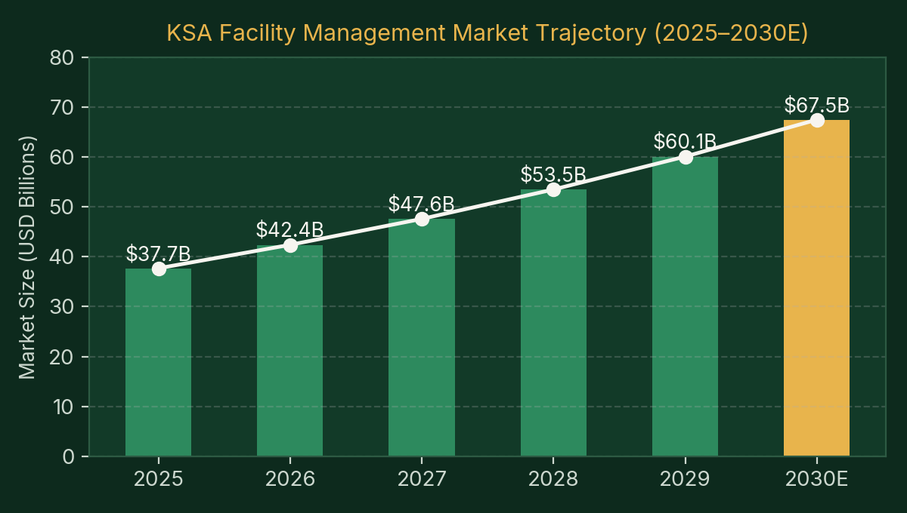
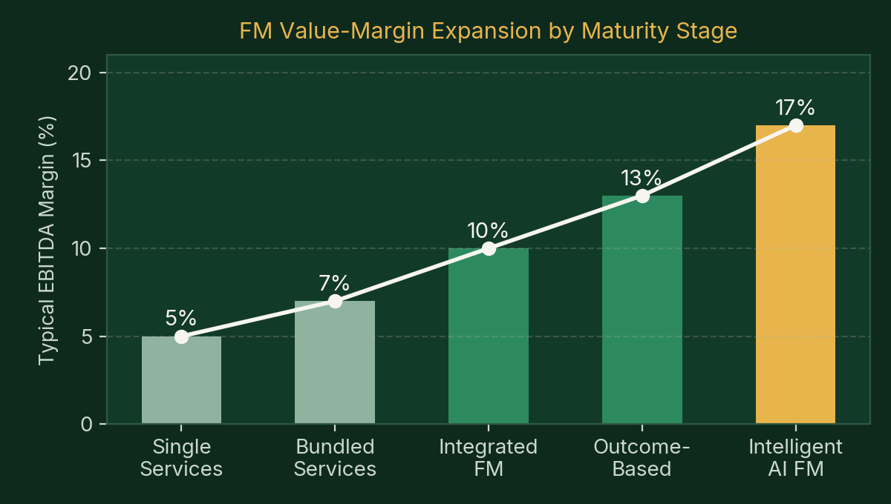
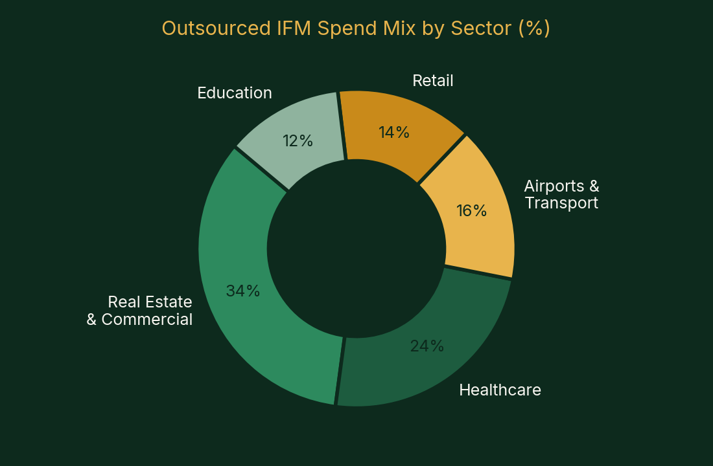
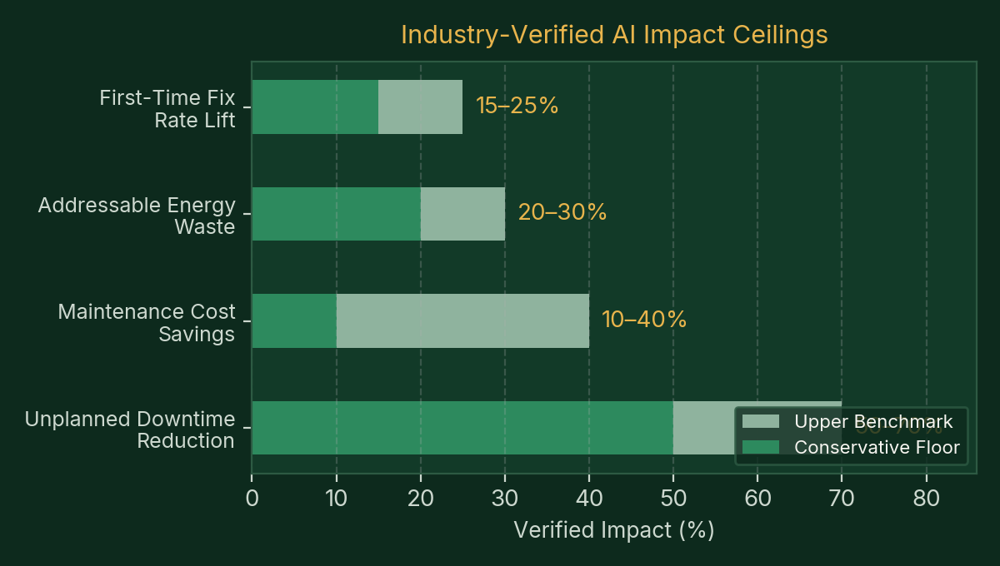
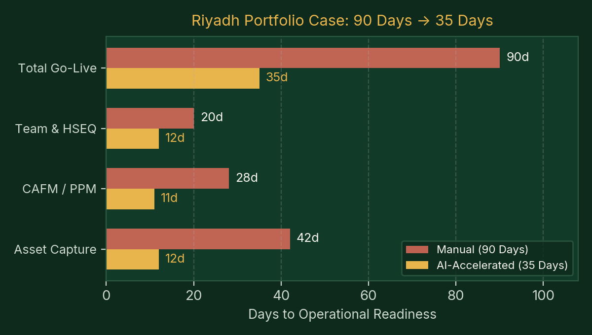
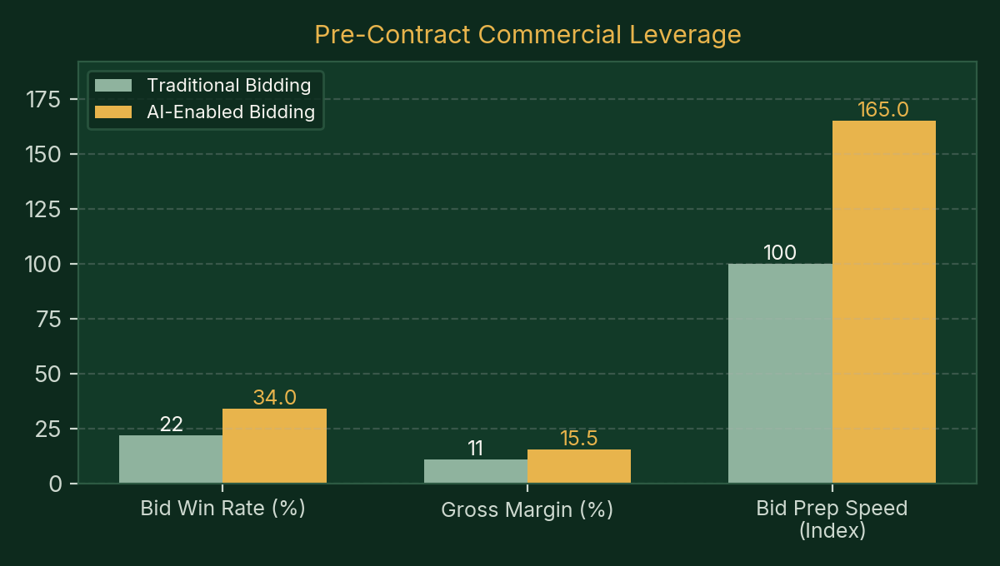
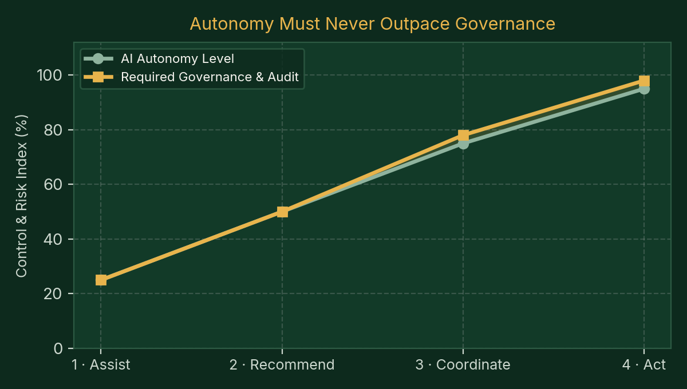

IFMA-Aligned Executive eBook · 15-Page Edition
AI Across the FM Value Chain
From the Plant Room to the Boardroom: A comprehensive, 100x-value playbook for C-suite leaders, asset owners, and FM engineers—featuring KSA Vision 2030 benchmarks, real case studies, and an EBITDA-first implementation roadmap.

$37.7B → $67.5BKSA FM Market (2025–2030E)
50–70%Downtime Reduction
9.0% → 15.3%Net Contract EBITDA
< 6 MonthsROI Payback Period
Authored by Aamir Zameer · Senior Forward Deployed Engineer & FM Advisory · AZ Consultants KSA
Executive Summary
The Mandate for Intelligent Facilities Management
Under ISO 41001 and IFMA standards, Facilities Management integrates People, Place, and Process to protect the core business. Yet across global and Saudi portfolios, FM operators remain trapped in low-margin, reactive service delivery.
Core Industry Thesis80% of AI pilots in Facilities Management fail—not because of weak AI models, but because nobody fixed the CAFM-to-BMS-to-ERP data plumbing first. When engineered around P&L outcomes, AI expands contract EBITDA from 9.0% to 15.3%+ and pays back in under 6 months.
| Metric | Verified Benchmark | Commercial Impact |
|---|
| KSA FM Market | $37.7B → $67.5B (2025–2030E, 12.4% CAGR) | Vision 2030 giga-projects shifting to 20-year IFM |
| Unplanned Downtime | 50% – 70% Reduction | Eliminates emergency call-outs and SLA penalties |
| Maintenance Cost | 10% – 40% Savings | Dynamic scheduling replaces rigid calendar PPM |
| Energy Waste | ~30% Addressable Waste | Continuous AI HVAC tuning cuts OpEx & carbon |
Who This eBook Is ForDesigned for CEOs, COOs, Asset Owners, and FM Directors seeking measurable EBITDA expansion rather than abstract technology hype.
Chapter 01 · Market Outlook
KSA FM Surges to $67.5B by 2030E
Saudi Arabia's Vision 2030 giga-projects—including NEOM, Red Sea Global, Qiddiya, and Diriyah—are transitioning from construction into multi-decade operational lifecycles. This shift demands Integrated Facilities Management (IFM) backed by real-time digital telemetry.

KSA Facility Management Market Trajectory (2025–2030E, USD Billions)
- Giga-Project Scale: Traditional spreadsheet-driven FM cannot govern smart-city portfolios.
- Outcome-Based Contracts: Asset owners increasingly tie fees to uptime, energy, and occupant CSAT.
Chapter 02 · Sector Economics & Maturity
Intelligent FM Triples EBITDA Margin vs Single Services
Single-service labour tenders trap operators at 5–7% EBITDA. Moving up the maturity curve to Integrated, Outcome-Based, and Intelligent AI FM expands net margins to 15–17%+.

EBITDA Margin Expansion by Maturity Stage
Outsourced IFM Spend Mix by Sector (%)
Commercial LeverageWrite KPIs in your client's P&L language: hospital bed uptime, airport gate turnarounds, and retail footfall.
Chapter 03 · The C-Suite Reality
Why 78% of FM Leaders Lose Margin to Data Silos
Across global FM portfolios, five structural pain points consistently erode contract profitability before AI is ever introduced:
 Top 5 Margin-Eroding Pain Points Reported by FM Leaders
Top 5 Margin-Eroding Pain Points Reported by FM Leaders
- 1. Data Silos (78%): CAFM, BMS, ERP, and HR operate independently—the boardroom never sees real-time P&L.
- 2. Unplanned Downtime (68%): Reactive firefighting triggers emergency spares and SLA penalties.
- 3. Blind Bidding (61%): Inaccurate RFP costing locks operators into loss-making multi-year contracts.
Chapter 04 · The AI Toolbox for FM
Six Specialised Intelligences Around One Business Problem
AI is not one monolithic tool. Value comes from mapping each operational pain point to the exact AI capability required.

Industry-Verified AI Impact Ceilings
| AI Capability | Core Role in FM | Primary Data Input |
|---|
| Vision & Multimodal | Leak detection, PPE compliance, nameplate OCR | CCTV video, technician photos |
| Predictive AI | 15–30 day failure forecasting on chillers & pumps | BMS telemetry + CAFM history |
| Agentic AI | Cross-system dispatch (BMS → CAFM → ERP) | APIs, work orders, stock levels |
Chapter 05 · Plant Room Intelligence
Vision AI Turns Existing CCTV into a 24/7 Leak Sensor
Detection is only the start—context creates meaning. Vision AI spots water pooling near Pump P-3, identifies the asset ID, assesses severity, and drafts a plain-language work order before a technician even enters the room.
 Bespoke Vision AI monitoring chilled-water pump room
Bespoke Vision AI monitoring chilled-water pump roomZero-Capex Quick WinMonetise existing security CCTV by adding Vision AI analytics—zero new wiring or hardware required.
Chapter 06 · Autonomous Operations
Agentic AI Orchestrates BMS, CAFM, ERP & Field Teams
Agentic AI moves beyond chat—it reads BMS/SCADA alarms, raises a CAFM work order, checks ERP spare-parts stock, assigns the nearest qualified technician, and enforces a Human-in-the-Loop approval gate for high-risk isolations.
 Integrated FM Operations Command Center with human approval gates
Integrated FM Operations Command Center with human approval gatesOperational ImpactAutomating routine Level-1 dispatches cuts helpdesk overhead by 30% while keeping humans in control of critical decisions.
Chapter 07 · Case Study 1 (Healthcare · KSA)
KSA Hospital Chiller Plant: -62% Unplanned Downtime
- Pain Point: Unplanned chiller trips risked OT/ICU cooling and triggered SAR 180K+ SLA penalties.
- AI Action: BMS telemetry + Predictive AI flagged seal wear 21 days early at 74% confidence.
- Verified Result: Downtime cut from 17.5h → 3.5h per event, 18% energy saved, 4.5-month payback.
 KSA Hospital Chiller Case: Reactive vs Predictive AI
KSA Hospital Chiller Case: Reactive vs Predictive AIKey LessonExtend existing heavy-asset life 3–5 years without capex replacement by adding a predictive telemetry layer.
Chapter 08 · Case Study 2 (Commercial · Riyadh)
Riyadh Portfolio: Mobilisation Compressed 90d → 35d
- Pain Point: Manual asset tagging caused 35% CAFM data errors and 90 days of non-billable mobilisation burn.
- AI Action: Technicians photographed AHU nameplates; Vision AI extracted brand, model, and O&M specs.
- Verified Result: 100% clean CAFM in 35 days — saving 55 days of non-billable burn on Day One.

Mobilisation Compression: 90d → 35d AI-Augmented Field Engineer
AI-Augmented Field Engineer
Chapter 09 · Case Study 3 (Mixed-Use · GCC)
Closed-Loop Memory Lifts Renewal Rate 54% → 86%
- Pain Point: Lost institutional memory at contract handover caused 46% contract churn.
- AI Action: Automated 360° value-delivered dossiers generated 6 months before contract expiry.
- Verified Result: 86% renewal rate and 98% CAFM accuracy at handover.
 Closing the Loop: Renewal & Knowledge Retention (%)
Closing the Loop: Renewal & Knowledge Retention (%)Strategic TakeawayThe end of one contract is the commercial launchpad for the next. Never lose institutional knowledge again.
Chapter 10 · Commercial & EBITDA Playbook
Expanding Net Contract EBITDA from 9.0% to 15.3%
AI expands contract margins across four levers: AI-enabled bidding (22% → 34% win rate), energy optimisation (+2.4% EBITDA), dynamic labour routing (+2.1%), and avoided SLA penalties (+1.8%).

Pre-Contract Commercial Leverage Contract EBITDA Waterfall: 9.0% → 15.3%
Contract EBITDA Waterfall: 9.0% → 15.3%
Monetisation TipStructure shared-savings clauses with asset owners to split the 20–30% AI energy reduction 50/50.
Chapter 11 · Implementation & ROI
Disciplined Adoption Achieves Payback in < 6 Months
AI is adopted when it changes daily workflows inside CAFM/BMS—not when a standalone pilot demo works. Prioritise use cases by EBITDA value and data readiness.
 AI Use-Case Prioritisation Matrix
AI Use-Case Prioritisation Matrix 12-Month AI Adoption & ROI J-Curve
12-Month AI Adoption & ROI J-Curve
Chapter 12 · Governance & Architecture
Scale Without Silos: Open APIs + Human-in-the-Loop
Today's isolated AI point-solutions become tomorrow's expensive silos. Build one open, modular, model-agnostic data spine with strict human accountability.

Autonomy Must Never Outpace Governance Connected Smart-Campus FM Ecosystem
Connected Smart-Campus FM Ecosystem
9 Core GuardrailsCybersecurity, data privacy, hallucination checks, auditability, business continuity, and zero vendor lock-in.
Chapter 13 · Your Next Step
The AZ Consultants KSA Path From Idea to EBITDA
Most advisors hand you a 100-page strategy PDF and leave. As Senior Forward Deployed Engineers, we fix your data plumbing, pass KSA tender compliance, and prove measurable EBITDA ROI in 90 days.
| Stage | Offer | Outcome |
|---|
| 1. Discover | Free 30-Min AI-in-FM Readiness Call | 3 ranked use cases & quick-win assessment |
| 2. Diagnose | Data & Process Maturity Audit | CAFM/BMS/ERP plumbing check + 0–5 scoring |
| 3. Design | Roadmap, EBITDA Model & Governance | Prioritised portfolio with <6-month payback plan |
| 4. Deliver | 90-Day Pilot → CAFM Integration | Working systems + KSA tender & bid support |
| 5. Scale | Portfolio Roll-Out & Value Tracking | Boardroom KPIs & quarterly margin reviews |